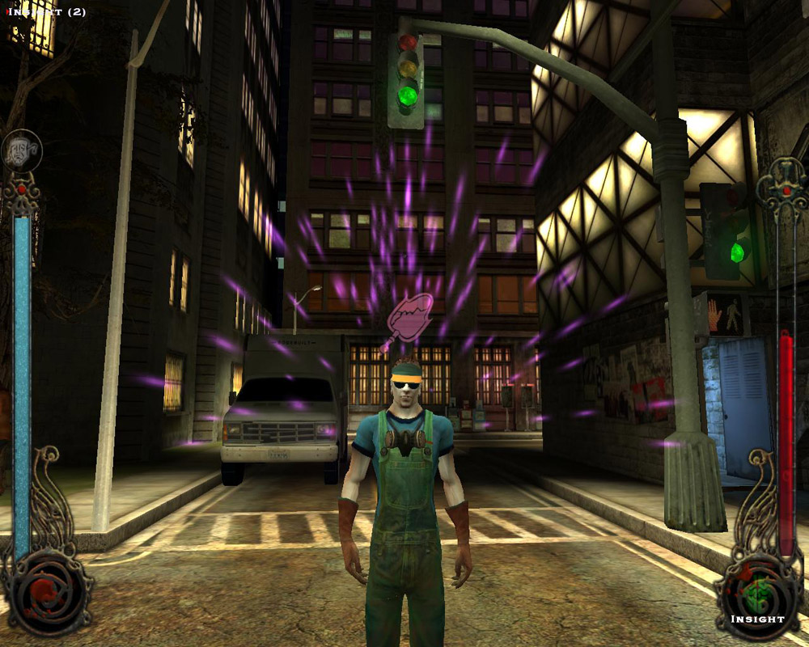

What I want to do is create textures for houses, who's window emit light. In essence I want an effect like in Vampires Bloodlines. I include a link to a screenshot here:

At first I thought what I have to do is add an alpha channel to a texture and import it as "Alpha = Emission" and then the brightness in that channel would make the part of the texture appear emitting light, but the effect was simply that the texture changed color to bright white like an overexposed photo.
Next I added a separate texture and linked that in the material editor under ambient. I thought here too a gray value would suffice, but the effect was the same.
Lastly I tried basically a copy of the diffuse texture in the emission texture, with the window part an exact copy of the diffuse texture and the wall part set to black and that gave me the effect I wanted.
So does that mean that this is the correct way to achieve the desired effect? Create a copy of the original texture, set all the parts that are not to emit light to black and leave the windows a copy of the diffuse texture at that location?
Thanks